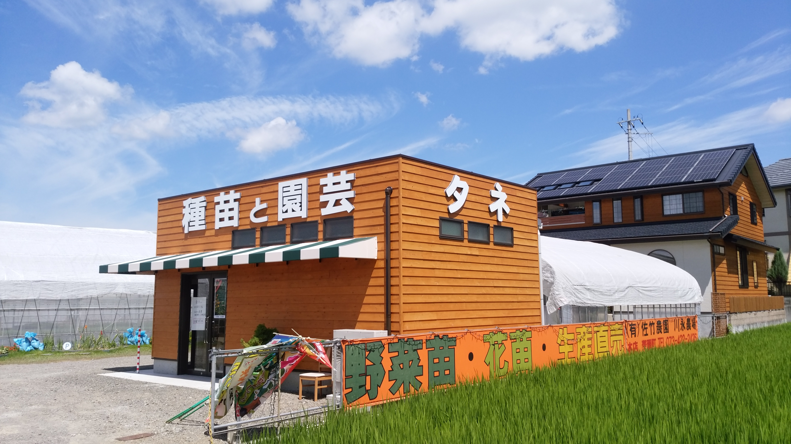
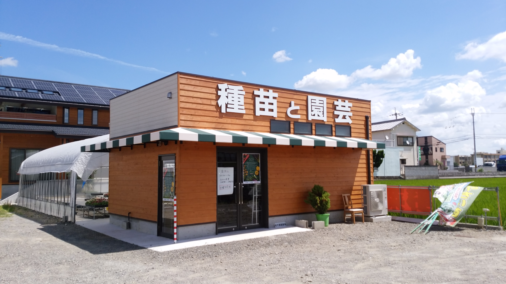
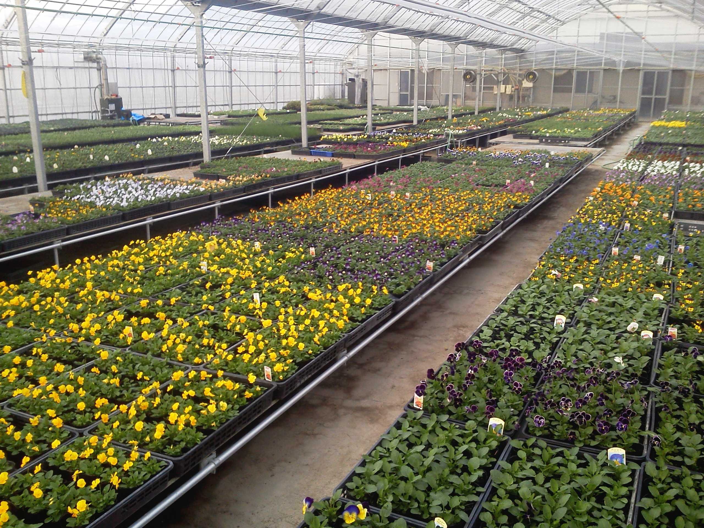
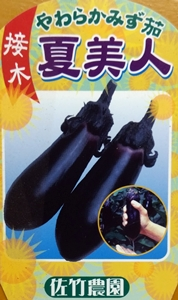

和歌山市の信頼ある種・苗・園芸用品のお店
和歌山市に拠点を置く種苗・園芸専門店です。自社農場で生産した高品質な野菜苗・花苗に加え、タキイ・サカタをはじめとする有名種苗メーカーの種子を300種類以上取り揃えています。
家庭菜園を楽しむ方からプロの農家の方まで、栽培に関するご相談もお気軽にどうぞ。


丁寧に育てた花苗

色とりどりの草花が並ぶ温室
花の種200種類以上、野菜の種300種類以上。タキイ・サカタなど有名種苗メーカーの商品を多数取り扱っています。
自社農場で生産したトマト・野菜の接ぎ木苗。熟練した職人の技術で品質の高い苗をお届けします。
季節に合わせた草花苗を年間を通じてご用意。プロの農家様から家庭菜園まで幅広く対応します。
種子・球根・取扱商品に関するご相談、栽培方法のアドバイスなど、お気軽にお問い合わせください。

佐竹農園オリジナル。やわらかみずなすの接ぎ木苗。
自社温室で丁寧に育てた色鮮やかな草花苗を季節ごとにご用意。
豊富な色と品種を揃えた人気の花苗。
LINEで友だち追加すると
新商品情報・入荷情報をいち早くお届けします！

QRコードを読み取って
友だち追加